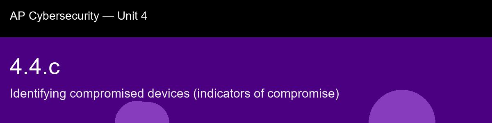

4.4.c recap, Identifying compromised devices (indicators of compromise)
Nice work today. Here's what to lock in:
- Recap handout:
post-lecture-handout.docx
- Simulation: SimLab
- Self-check quiz: due before next class
The big picture: The Meridian scenario ties this entire unit together on purpose: a new unauthorized admin account (a 4.2.d least-privilege violation), a disabled antivirus service (defeating 4.3.b's endpoint protection), and an outbound connection to a known-malicious IP (the exact network-based IOC signature EDR watches for in 4.4.a), three artifacts that are individually explainable but collectively describe one coherent attack story: gain access, disable the tooling that might catch you, establish persistence, phone home. Weighted scoring is worth connecting explicitly back to CVSS from 4.3.c, because it's the same underlying move applied to a different question, instead of "how severe is this vulnerability," it's "how strongly does this specific artifact suggest compromise", and both exist for the identical reason: fuzzy, instinctive risk judgment doesn't scale, but a number compared against a threshold does. Last, keep IOC and IOA cleanly separated, because it's a distinction about timing, not severity: an IOC is evidence a step already happened (a file with a .locked extension already sitting on disk), while an IOA tries to catch the attacker's technique while it's still unfolding (a process starting to enumerate files by extension, which is exactly what ransomware does in the seconds before encryption begins), and that's a fitting place to end Unit 4, because it's the same idea the whole unit has been building toward: the earlier in the attack chain you can reliably recognize what's happening, the more of the damage in 4.1's malware section never gets the chance to occur at all.
Key terms to lock in:
- Indicator of compromise (IOC), forensic evidence (a file, network connection, account, configuration change, or behavior) suggesting a device has been breached.
- Persistence, an attacker technique for maintaining access to a compromised system even after the initial foothold is discovered or the system is rebooted.
- Threat intelligence feed, a shared, continuously updated source of known-malicious indicators (hashes, IPs, domains) that organizations subscribe to.
- Compromise score, a numeric value produced by summing the weights of every IOC observed on a device, used to classify overall risk.
- Indicator of attack (IOA), evidence of an attacker's intent or technique while an attack is actively in progress, as opposed to after-the-fact evidence (IOC).
Common misconceptions -- don't fall for these:
- "Any single suspicious artifact proves a device is compromised." → One IOC alone is usually ambiguous and may have an innocent explanation. Confident verdicts come from combining multiple independent IOCs, similar to correlating multiple log entries in 4.4.b.
- "All IOCs are equally serious." → A confirmed known-malicious file hash is far stronger evidence than a single failed login. Weighted scoring reflects that different IOC types carry very different levels of severity.
- "IOCs and IOAs are the same thing." → An IOC is typically after-the-fact evidence that something already happened; an IOA focuses on catching the attacker's technique while it is still in progress.
Learning objective(s): 4.4.B, 4.4.C

## 4.4.c recap, Identifying compromised devices (indicators of compromise)
Nice work today. Here's what to lock in:
- Recap handout: `post-lecture-handout.docx`
- Simulation: SimLab
- Self-check quiz: due before next class
**The big picture:** The Meridian scenario ties this entire unit together on purpose: a new unauthorized admin account (a 4.2.d least-privilege violation), a disabled antivirus service (defeating 4.3.b's endpoint protection), and an outbound connection to a known-malicious IP (the exact network-based IOC signature EDR watches for in 4.4.a), three artifacts that are individually explainable but collectively describe one coherent attack story: gain access, disable the tooling that might catch you, establish persistence, phone home. Weighted scoring is worth connecting explicitly back to CVSS from 4.3.c, because it's the same underlying move applied to a different question, instead of "how severe is this vulnerability," it's "how strongly does this specific artifact suggest compromise", and both exist for the identical reason: fuzzy, instinctive risk judgment doesn't scale, but a number compared against a threshold does. Last, keep IOC and IOA cleanly separated, because it's a distinction about *timing*, not severity: an IOC is evidence a step already happened (a file with a `.locked` extension already sitting on disk), while an IOA tries to catch the attacker's technique while it's still unfolding (a process starting to enumerate files by extension, which is exactly what ransomware does in the seconds before encryption begins), and that's a fitting place to end Unit 4, because it's the same idea the whole unit has been building toward: the earlier in the attack chain you can reliably recognize what's happening, the more of the damage in 4.1's malware section never gets the chance to occur at all.
**Key terms to lock in:**
- **Indicator of compromise (IOC)**, forensic evidence (a file, network connection, account, configuration change, or behavior) suggesting a device has been breached.
- **Persistence**, an attacker technique for maintaining access to a compromised system even after the initial foothold is discovered or the system is rebooted.
- **Threat intelligence feed**, a shared, continuously updated source of known-malicious indicators (hashes, IPs, domains) that organizations subscribe to.
- **Compromise score**, a numeric value produced by summing the weights of every IOC observed on a device, used to classify overall risk.
- **Indicator of attack (IOA)**, evidence of an attacker's intent or technique while an attack is actively in progress, as opposed to after-the-fact evidence (IOC).
**Common misconceptions -- don't fall for these:**
- "Any single suspicious artifact proves a device is compromised." → One IOC alone is usually ambiguous and may have an innocent explanation. Confident verdicts come from combining multiple independent IOCs, similar to correlating multiple log entries in 4.4.b.
- "All IOCs are equally serious." → A confirmed known-malicious file hash is far stronger evidence than a single failed login. Weighted scoring reflects that different IOC types carry very different levels of severity.
- "IOCs and IOAs are the same thing." → An IOC is typically after-the-fact evidence that something already happened; an IOA focuses on catching the attacker's technique while it is still in progress.
**Learning objective(s):** 4.4.B, 4.4.C